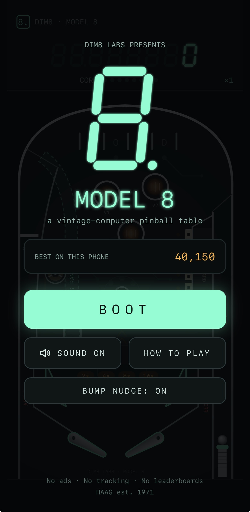
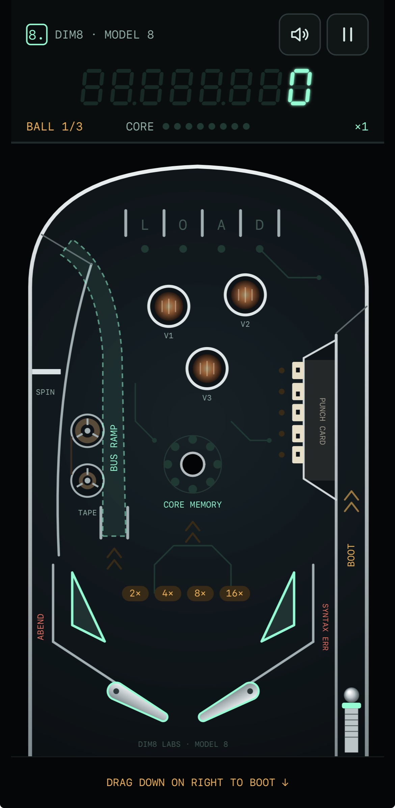

Web / Progressive Web App
Model 8 Pinball
A vintage-computer-inspired pinball game built as a Progressive Web App.
Pinball on the web
This portfolio page introduces Model 8 Pinball, available now as a web application and installable PWA. Use Play Now to open the live game, or View Source to visit the separate GitHub project repository.
Platform availability
- Web / PWAAvailable now
- Native iOSPlanned
- Native AndroidPlanned
Screenshots


Install App
These steps install the current web app. The planned native iOS and Android apps are not yet available.
Safari
- Open dim8labs.com/model8-pinball/ in Safari.
- Tap Share. On some Safari layouts, tap Page Menu, then Share.
- Select Add to Home Screen.
- Enable Open as Web App, if presented.
- Tap Add.
Model 8 Pinball will appear on the Home Screen and launch as an app.
Google Chrome
- Open dim8labs.com/model8-pinball/ in Chrome.
- Open the three-dot menu.
- Select Install and create shortcut, Install app, or Add to Home screen. The label varies by Chrome version.
- Confirm installation.
Model 8 Pinball can then be launched from the Home Screen or app launcher.